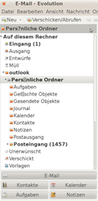

Outlook2Evolution
Archivierte Anleitung
Dieser Artikel wurde archiviert, da er - oder Teile daraus - nur noch unter einer älteren Ubuntu-Version nutzbar ist. Diese Anleitung wird vom Wiki-Team weder auf Richtigkeit überprüft noch anderweitig gepflegt. Zusätzlich wurde der Artikel für weitere Änderungen gesperrt.
Zum Verständnis dieses Artikels sind folgende Seiten hilfreich:
Dieser Artikel beschreibt die Daten-Migration von MS-Outlook nach Evolution mit Hilfe von hier bereitgestellten Shell-Skripten[7] und der Outlook-PST-Datei, wodurch keine lauffähige Outlook-Installation (und damit auch kein lauffähiges Windows) benötigt wird. Diese Lösung basiert auf readpst, Bestandteil der libpst-Bibliothek  . Alternative Migrations-Möglichkeiten sind am Ende des Artikels beschrieben.
. Alternative Migrations-Möglichkeiten sind am Ende des Artikels beschrieben.
Migrations-Ziele¶
Migration von Outlook-Daten¶
Mit Hilfe dieser Anleitung und den angefügten Shell-Skripten können folgende Daten von MS-Outlook exportiert und in Evolution importiert werden ("Migration").
E-Mails im Posteingang (Unter-Ordner mit E-Mails werden auch migriert)
Kontakte
Kalender-Einträge
Notizen
Aufgaben
Der Zeitaufwand für die Migration beträgt ca. ein bis drei Stunden, in Ausnahmefällen (bei Problemen, die eine manuelle Nacharbeit erfordern) auch länger.
|  |
| falscher Zeichensatz |
Unicode-Konvertierung der Daten¶
Bis Outlook 2002 wurde in den PST-Dateien noch kein Unicode-Zeichensatz verwendet, sondern der ANSI-Zeichensatz. Linux verwendet jedoch Unicode. Daher ist bei der Daten-Migration von PST-Dateien im alten Outlook-Format eine Zeichensatz-Konvertierung notwendig, die im Migrations-Skript eingestellt werden kann. Die Konvertierung wird in den Skripten mit dem Kommando iconv vorgenommen.
Seit Outlook 2003 wird ein neues Datei-Format mit Unicode verwendet (wenn man die PST in diesem Format erstellt hat, nicht jedoch bei Weiterverwendung einer alten PST-Datei oder Erstellung der PST-Datei in einem alten Format). Eine falsche Zeichensatz-Konvertierung erkennt man am Fragezeichen bzw. eines Platzhalter-Zeichens in Evolution an Stelle des Sonderzeichens:
Einschränkungen¶
Unterstützte Outlook-Versionen¶
Durch die Verwendung von readpst werden nur Outlook-Versionen unterstützt, die auch von readpst unterstützt werden.
Unterstützte Outlook-Datei-Versionen
Outlook 2002 SP3: Getestet mit Ubuntu 10.04 LTS
Outlook 2003: Von readpst unterstützt, mangels Outlook-Lizenz aber nicht getestet
Outlook 2007 SP2 (erstellt unter Windows Vista Prof.): Getestet mit Ubuntu 10.10
Outlook 2010 (erstellt unter Windows 7): Getestet mit Ubuntu 10.04 LTS
Nicht unterstützte Outlook-Datei-Versionen¶
Outlook Express (das Datei-Format ist anders -> kein PST-Format; siehe Datenmigration/Outlook Express)
Empfehlungen¶
Aufgrund der bekannten Probleme eignet sich die hier beschriebene Migrations-Methode
perfekt für die E-Mail-Migration
ausreichend für die Kontakte-Migration (Empfehlung: Einen eigenen lokalen Sync-Dienst installieren)
schlecht für die Kalender-Migration (Empfehlung: Einen eigenen lokalen Sync-Dienst installieren)
gut für die Notizen-Migration
gut für die Aufgaben-Migration
Installation¶
Vorbereitungen¶
Sicherheits-Kopien erstellen¶
Achtung!
Bitte unbedingt Sicherheits-Kopien aller Daten-Dateien erstellen, bevor die Migration gestartet wird!
Die Shell-Skripte zur Daten-Migration verändern Evolution-Daten-Dateien. Diese müssen daher unbedingt vorher gesichert werden, um die alten Daten bei Bedarf wiederherstellen zu können. Evolution speichert seine Daten (E-Mails, Adressbuch etc.) im Homeverzeichnis unter dem versteckten Verzeichnis ~/.evolution ab. Es ist direkt in Evolution möglich, über das Menü "Datei -> Einstellungen sichern" ein Backup zu erstellen. Über das Menü "Datei -> Einstellungen zurücksetzen" kann man die gesicherten Daten wieder herstellen. Siehe auch Sicherheits-Kopien von Evolution-Daten.
Benötigte Pakete¶
Die Skripte verwenden
readpst
 mit apturl
mit apturl
Paketliste zum Kopieren:
sudo apt-get install readpst
sudo aptitude install readpst
Hinweis:
Es wird dringend empfohlen, auf die Version 0.6.45 oder neuer zurückzugreifen, da die in den Paketquellen vorliegende Versionen veraltet sind. Dazu den aktuellsten Quellcode  als tar.gz-Archiv herunterladen, entpacken[2] und das Programm kompilieren[3]. Das kann auch mit den ersten beiden Skripten aus der ZIP-Datei erledigt werden (1_setup_packages.sh und 2_build_libpst.sh).
als tar.gz-Archiv herunterladen, entpacken[2] und das Programm kompilieren[3]. Das kann auch mit den ersten beiden Skripten aus der ZIP-Datei erledigt werden (1_setup_packages.sh und 2_build_libpst.sh).
Skipte beziehen¶
Zuerst lädt man die ZIP-Datei auf die Festplatte: Migrations-Skripte . Dann wird die ZIP-Datei entpackt und die Skripte ausführbar[4] gemacht.
Hinweis!
Fremdsoftware kann das System gefährden.
Hinweis:
Bitte sicherstellen, dass die Skripte in ein Verzeichnis entpackt werden, das die Ausführung von Skripten erlaubt. Dies kann durch Eingabe des Befehls mount überprüft werden. Wurde eine Daten-Partition ohne die Rechte zum Ausführen von Skripten eingehängt, steht in der Ausgabe-Zeile in Klammern das Kürzel noexec.
Um das zu ändern, muss man die Datei /etc/fstab mit Root-Rechten[6] editieren und die Option noexec aus der entsprechenden mount-Anweisung entfernen.
Nach einen umount und erneutem mount der Partition (oder einem Neustart) sind auch Skripte ausführbar (zur Sicherheit durch erneute Eingabe von mount prüfen!).
Verwendung¶
Export aus der Outlook-PST-Datei¶
Zuerst kopiert man die zu migrierende Outlook-Daten-Datei in das Verzeichnis, in dem sich auch die Skripte befinden. Das geht am einfachsten mit Hilfe einer Windows-Laufwerks-Freigabe, USB-Stick, einer Sicherheits-Kopie o.ä. Vor dem Export der Daten aus der Outlook-Datei öffnet man das Skript 3_export_outlook_data.sh mit einem Editor[5], sucht folgenden Skript-Code
... # Set this variable to the absolute path of the readpst bin file # that shall be used to export the outlook data. # Default: Look in same path as this script myreadpst="$scriptpath/readpst" #myreadpst="readpst" # Enable this setting to use your locally installed version of readpst ...
Will man statt der kompilierten (neusten) Version von readpst die veraltete Version von Ubuntu verwenden (nicht empfohlen!), ändert man die Zeilen wie folgt ab und speichert das Skript dann:
... # Set this variable to the absolute path of the readpst bin file # that shall be used to export the outlook data. # Default: Look in same path as this script # myreadpst="$scriptpath/readpst" myreadpst="readpst" # Enable this setting to use your locally installed version of readpst ...
Für den eigentlichen Export der Daten aus der zu migrierenden Outlook-PST-Datei ruft man das Skript so auf[8]:
./3_export_outlook_data.sh EIGENE-OUTLOOK-DATEI.pst
Daten importieren in Evolution¶
E-Mails¶
Um die E-Mails nach dem Export in Outlook zu importieren, öffnet man vorher das Skript 4_email_mbox2evolution.sh in einem Editor, um die Zeichen-Kodierung der Outlook-Daten-Datei passend einzustellen. Folgende Code-Zeilen müssen entsprechend der Outlook-Daten-Datei-Version geändert werden:
Bei Outlook-Daten-Dateien bis Outlook 2002:
# File and folder names can be converted independently from the file contents # since this seems to be required for some Outlook data files for unknown reasons. FILE_NAME_ENCDN=iso-8859-1 FILE_CONTENT_ENCDN=iso-8859-1 # To switch off the conversion set this variable to "n" (n=no) (y=yes) # Normally the mbox file need not to be converted anymore since the contained # characters are already OK but who knows what outlook does... DO_FILE_CONTENT_ENCDN_CONVERSION=n
Bei Outlook-Daten-Dateien ab Outlook 2003:
# File and folder names can be converted independently from the file contents # since this seems to be required for some Outlook data files for unknown reasons. FILE_NAME_ENCDN=utf-8 FILE_CONTENT_ENCDN=utf-8 # To switch off the conversion set this variable to "n" (n=no) (y=yes) # Normally the mbox file need not to be converted anymore since the contained # characters are already OK but who knows what outlook does... DO_FILE_CONTENT_ENCDN_CONVERSION=n
Pfad zur lokalen Email-Datenbank (bis Ubuntu 10.10):
# Folder where evolution stores the local emails evolution_localmail="$HOME/.evolution/mail/local"
Pfad zur lokalen Email-Datenbank (ab Ubuntu 11.04):
# Folder where evolution stores the local emails evolution_localmail="$HOME/.local/share/evolution/mail/local"
Hinweis:
Andere Sprach-Versionen von Outlook-Daten-Dateien bis Version 2002 (z.B. Japanisch) können durch entsprechendes Ändern dieser Skript-Variablen ebenfalls migriert werden, die Voreinstellung arbeitet jedoch korrekt für die meisten westeuropäischen Sprachen.
Nach der erfolgreichen Ausführung des Skripts mit
./4_email_mbox2evolution.sh
öffnet man Evolution und findet die migrierten E-Mails im Ordner "Lokal -> Outlook".
Hinweis:
Sollten die deutschen Sonderzeichen (äöüß) in den Ordner-Namen oder in den E-Mails falsch angezeigt werden, hat man wahrscheinlich die Outlook-Datei mit der falschen Zeichen-Kodierung migriert. Als Lösung verwendet man einfach eine andere Kodierung oder schaltet testweise die Konvertierung der Datei-Inhalte ganz aus (durch Ändern der Skript-Variablen, siehe oben) und startet die Migration der E-Mails erneut. Das Skript löscht zuerst immer das outlook-Verzeichnis aus Evolution heraus, bevor die E-Mails erneut nach Evolution migriert werden, so dass keine doppelten E-Mails vorhanden sind. Will man die importieren E-Mails für Vergleichs-Zwecke behalten oder mehrere Outlook-Archiv-Dateien konvertieren, benennt man den Outlook-Ordner vor dem erneuten Aufruf des Skripts einfach um in Evolution.
Kontakte¶
Outlook-Datendatei bis Version 2002¶
Falls die Outlook-Datei im Datei-Format bis 2002 erstellt wurde, ist eine Konvertierung der Sonderzeichen notwendig, die durch Aufru eines Skripts durchgeführt wird. Vor Ausführung des Skripts muss man die richtige Zeichen-Kodierung im Skript einstellen, die Voreinstellung funktioniert für westeuropäischen Sprachen. Dazu editiert man das Skript und trägt hier die verwendete Kodierung der Outlook-Datendatei ein (iso-8859-1):
# File and folder names can be converted independently from the file contents # since this seems to be required for some Outlook data files for unknown reasons. FILE_NAME_ENCDN=iso-8859-1 FILE_CONTENT_ENCDN=iso-8859-1
Das Skript zur Zeichen-Konvertierung für Outlook-Datei-Formate bis 2002 ruft man im Terminal auf mit:
./5_contacts_2vcard.sh
Dadurch wird die konvertierte Datei mit der Datei-Endung *.converted im gleichen Verzeichnis erstellt, in der auch die ursprüngliche von readpst exportierte Kontakte-Datei abgelegt ist. Der Pfad wird vom Skript ausgegeben. Wenn die Konvertierung nicht korrekt funktioniert, ändern man die Zeichen-Kodierung im Skript ab und startet das Skript neu. Die vorhandene konvertierte Kontakte-Datei wird dann überschrieben.
Outlook-Datendatei ab Version 2003¶
Hier ist keine Konvertierung erforderlich, die exportierte Kontakte-Datei kann direkt importiert werden. Die Kontakte befinden sich normalerweise (bei einer deutschen Outlook-Version) im Verzeichnis outlook_raw/Persönlicher Ordner/ in der Datei Kontakte.
Import der Kontakte nach Evolution¶
Die Kontakte müssen mit Hilfe des Import-Assistenten von Evolution importiert werden:
In Evolution die "Kontakte"-Schaltfläche auswählen
Ein neues Adress-Buch mit "Neu -> Adressbuch" anlegen
Typ des Adressbuchs ist "lokal (auf diesem Computer)"
Die Haken vor "Standard-Adressbuch" entfernen
"Datei -> Import"
"Eine einzelne Datei importieren"
Die exportierte oder konvertierte Kontakte-Datei auswählen und "vcard" als Datei-Typ angeben
Das zuvor neu angelegte Adressbuch als Import-Ziel auswählen
Den Import mit "Import" (bzw. "Anwenden") starten
Durch die Erstellung eines neuen Adressbuchs für den Import kann man bei Import-Fehlern die importierten Kontakte einfach wieder löschen (durch Löschen des Adressbuchs) und den Import mit geänderten Einstellungen erneut durchführen. Für Test-Zwecke können auch mehrere konvertierte Varianten der Kontakte in verschiedenen Adressbüchern abgelegt und verglichen werden. Entscheidet man sich dann für ein Adressbuch, löscht man die anderen wieder heraus.
Kalender, Notizen, Aufgaben¶
Die Daten-Datei befindet sich im Unter-Verzeichnis outlook_raw im gleichen Verzeichnis wie in Outlook. Für den Import des Kalenders verwendet man den Import-Assistenten von Evolution und geht genau so wie bei den Kontakten vor (d.h. einen neuen Kalender anlegen und dort hinein importieren für Test-Zwecke).
Beim Import-Assistenten wählt man beim Datei-Typ "iCalender-Dateien (.ics)" und bei "Termine und Besprechungen" unter "Auf diesem Rechner" den Kalender, den man in Evolution vorher (als lokalen Kalender) neu angelegt hat.
Eine Zeichensatz-Konvertierung (für Outlook-Dateiformate bis 2002) ist als Skript z. Z. noch nicht implementiert, das Skript für die Konvertierung der Kontakte kann hierfür bei Bedarf jedoch leicht abgeändert werden. Nach dem Import kontrolliert man die Termine und löscht den neu angelegten Kalender bei Bedarf wieder, um den Import mit anderen Einstellungen (Zeichensatz) zu wiederholen.
Hinweis:
Aufgrund der Probleme von readpst mit den Termin-Uhrzeiten sollte eine Migration der Kalender-Ereignisse nur im Notfall mit auf diesem Weg durchgeführt werden, da so die Kalender-Ereignisse manuell nachbearbeitet werden müssen.
Für die Notizen und Aufgaben ist das Vorgehen entsprechend.
Bekannte Probleme¶
E-Mails¶
Die in Evolution importierten E-Mails werden alle als "ungelesen" angezeigt (in fetter Schriftart).
Beim ersten Öffnen der importierten E-Mail-Verzeichnisse muss Evolution die E-Mails neu indizieren, so dass die Anzeige der E-Mails einmalig länger dauern kann. Nach dem Indizieren gibt es keine Verzögerungen mehr.
Kontakte¶
Bei Verwendung des veralteten Standard-readpst von Ubuntu werden Kategorien und Notizen sowie Ereignis-Kategorien nicht exportiert. Dies ist erst ab readpst in der Version 0.6.45 möglich (und damit auch mit der im Skript 2 kompilierten neusten Version von readpst)
Eine in den Kontakten im Feld "Webseite" eingetragene URL wird von readpst nicht exportiert (getestet mit readpst Version 0.6.49).
Ereignisse vor dem 01.01.1970 werden falsch exportiert (als Ereignis zum 01.01. 1970). Die Ursache liegt in readpst, wann genau dies geschieht, ist unklar (Vermutung: Falscher Datentyp in C für Datums-Werte). Z.B. werden Geburtstage und Jahrestage um mehrere Stunden verschoben (nach vorne oder hinten) und gehören damit zum vorherigen oder nächsten Tag.
Kalender¶
Ganztägige Ereignisse werden u.U. um mehrere Stunden verschoben (abhängig von der Zeitzone des Ereignisses). Ob dieser Fehler immer auftritt, ist unklar. Möglicherweise werden auch nur mit Windows Mobile (auf Smartphones) erzeugte Ereignisse, die mit ActiveSync mit Outlook synchronisiert wurden, falsch datiert.
Wiederkehrende Ereignisse werden u.U. nicht als solche migriert. Die Ursache ist unklar.
Ganztägige Ereignisse werden u.U. nicht also solche gekennzeichnet in Evolution. Stattdessen haben sie eine Start- und End-Uhrzeit von 0.00 Uhr (= 24 h Dauer).
Provisorische Lösungen¶
Die bekannten Probleme können nur durch manuelle Nacharbeit nach der Migration behoben werden.
Alternative Migrations-Möglichkeiten¶
Alternativ zu dem hier beschriebenem Migrations-Weg gibt es diverse andere Wege, die sich vor allem darin unterscheiden,
ob ein lauffähiges Outlook benötigt wird oder nicht
ob die Migration direkt oder über einen anderen PIM-Client erfolgt
ob die Migration auf dem lokalen Rechner bzw. Netzwerk oder über einen Internet-Dienst erfolgt.
Migration mit Thunderbird¶
Thunderbird ist ein Plattform-übergreifender E-Mail-Client, der auch Daten von Outlook importieren kann. Da Thunderbird auch für Windows verfügbar ist, kann man Thunderbird in Windows installieren, alle Daten von Outlook übernehmen und dann von Thunderbird nach Evolution migrieren.
Im Wiki gibt es mehrere Anleitungen dazu:
E-Mails mit IMAP migrieren¶
Wenn man nur seine E-Mails migrieren möchte, kann man auch den den IMAP-Dienst seines E-Mail-Providers benutzen, indem man
in Outlook einen neuen E-Mail-Zugang über das IMAP-Protokoll einrichtet für seinen E-Mail-Provider
alle lokal in Outlook gespeicherten E-Mails (inklusive aller Unterverzeichnisse) auf den IMAP-Server kopiert
in Evolution ein neues E-Mail-Postfach mit IMAP-Zugang zum gleichen E-Mail-Provider einrichtet
die E-Mails (inkl. aller Unterverzeichnisse) wieder in ein lokales Evolution-Postfach herunterlädt.
Diese Migration spart Zeit, man vertraut damit jedoch seinem E-Mail-Provider alle E-Mails an, auch wenn sie schon recht alt sind.
Kontakt-Daten über CSV-Text-Datei migrieren¶
Evolution ist in der Lage, eine passend vorbereitete CSV-Datei mit den Kontakt-Daten zu importieren (siehe Evolution).
Eigenen lokalen Sync-Dienst installieren¶
Für eine Daten-Migration kann man auch einen freien SyncML-Server auf einem lokalen Computer sowie jeweils einen passenden Client installieren für Outlook und Evolution. Eine ausführliche Beschreibung unter Verwendung des freien Funambol-Servers ist im Wiki unter Archiv/Funambol zu finden. Diese Lösung hat den Vorteil, dass man
auch die Kalender-Einträge migrieren kann ohne die lästige manuelle Nacharbeit, die aufgrund der Schwächen von readpst anfallen würde.
den Funambol-Server gleich weiter verwenden kann, um mobile Geräte wie Handys oder Smartphones mit Evolution auf dem lokalen PC zu synchronisieren.
Die Installation von Funambol (Server und Clients) dauert ca. ein bis drei Stunden.
Internet-Dienste zur Daten-Synchronisierung¶
Anstelle eines lokal installierten Sync-Dienstes kann man auch einen kostenlosen Sync-Dienst im Internet verwenden, z. B.:
google sync
 (wenn man ein google-Benutzerkonto hat)
(wenn man ein google-Benutzerkonto hat)
Dafür muss nur eine Sync-Client-Software installiert werden, jedoch kein Sync-Server (was Zeit spart). Außerdem kann man von überall "mobil" auf den Sync-Server zugreifen, Daten synchronisieren und nachschlagen. Auch der Aspekt einer externen Sicherheits-Kopie seiner Daten ist von Vorteil. Allerdings sollte man sich gut überlegen, ob man seine Daten einfach einem Internet-Dienst anvertrauen will.
Anhang¶
Skript-Dateien herunterladen¶
Die aktuelle Version der Shell-Skripte steht hier zum Herunterladen bereit:
Migrations-Skripte (als ZIP-Archiv) - Version vom 26.08.2011
Links¶
Überblick über das Outlook-PST-Dateiformat (Personal Storage Table)
Microsoft technet: Outlook 2010 PST ist mit früheren Versionen kompatibel
Dokumentation des mbox-Datei-Formates für E-Mails (mit Evolution-spezifischen Ergänzungen)
Konvertierung der Sprach-Kodierung von Text-Dateien mit iconv
- Erstellt mit Inyoka
-
 2004 – 2017 ubuntuusers.de • Einige Rechte vorbehalten
2004 – 2017 ubuntuusers.de • Einige Rechte vorbehalten
Lizenz • Kontakt • Datenschutz • Impressum • Serverstatus -
Serverhousing gespendet von